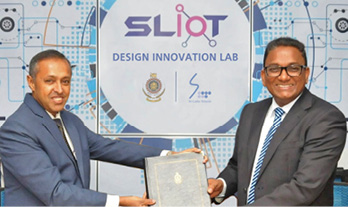
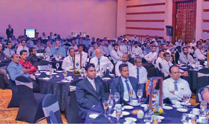

Management Discussion and Analysis
Business Partner Capital


SLT provides a wide range of ICT services to the Government, Enterprise Customers and Domestic Operators in Sri Lanka. As part of its national duty to uplift and enable the business environment in Sri Lanka, SLT has established ties with several business partners to provide these services to customers across the country, ensuring mutual continued successes in a spirit of co-existence, co-innovation, and collaboration. In 2019, SLT established several new partnerships to bring cutting-edge infrastructure and innovative solutions to the Sri Lankan market.
New strategic alliances, collaborations, and joint ventures
Lotus Tower |
SLT completed building the exceptional and intricate fibre optical telecommunication infrastructure on the Lotus Tower in 2019. The Lotus Tower is one of the significant landmarks in the burgeoning Sri Lankan urban landscape and an epitome of the Sri Lankan economy, culture, and development. SLT partnered with China National Electronics Import and Export Corporation, the main contractor for the project, and signed a Memorandum of Understanding (MoU) with TRCSL to develop ICT solutions for the Tower. SLT also partnered with China National Electronics Import and Export Corporation to develop Extra Light Voltage Solutions/Weak Current System and ICT solutions under 14 sub-systems of internal telephones, LAN-WAN and IPTV, information publishing, building management, access control, video surveillance and control, public addressing, wireless intercom, wireless patrolling, energy management, fire detection and alarming, smart solutions for VIP guest rooms, wireless ordering solution (for the revolving restaurant and banquet halls), and GPS synchronised digital clock system. | |
VMware VCPP Partnership |
SLT entered into a partnership with VMware Inc, a leading innovator in virtualisation and cloud solutions, to drive Akaza cloud adoption and speed up the digital transformation journey for Sri Lankan enterprises. SLT offers premium cloud services through an “as-a-service” business model through this technology which is part of the VMware Cloud Provider Programme. Thereby we help enterprises to improve their flexibility, agility and streamline their work flows. | |
Microsoft Azure Stack |
SLT joined with Microsoft and John Keells IT (JKIT) to unveil Microsoft’s cloud technology, Microsoft Azure Stack, for the first time in Sri Lanka. Azure Stack is an extension of Microsoft’s Azure cloud platform that extends Azure services and capabilities to any environment from data centres to remote offices. The three companies will explore the joint development of cloud solutions on Azure Stack to support customers with specific use cases to meet regulatory requirements and requirements at the edge, including SLT’s content streaming services. Customers will be able to leverage Azure’s services through the public cloud and maintain data sovereignty by hosting their data locally in the private cloud. | |
Fon |
We also linked up with Fon, the world’s leading Wi-Fi carrier provided based in Madrid, Spain, to deliver Wi-Fi connectivity to SLT’s subscriber base. The deal also includes Fontech’s robust, carrier-grade Wi-Fi Service Management Platform (WSMP) and Connection Manager to deliver seamless Wi-Fi access locally. Through a roaming agreement with Fon, SLT will grant SLT subscribers international access to Wi-Fi in over 23 million locations around the world.. | |
Huawei Technologies |
We undertook a major initiative to facilitate the digital transformation of Sri Lanka, linking with Huawei Technologies Lanka Co. (Pvt) Ltd. The digital projects involved will have a special focus on digitalising Government institutions in the country. They will include the Colombo Port and Polonnaruwa Smart City projects, and other applicable projects under the Government’s “Digital Sri Lanka” initiatives. Under the MoU, Huawei role will be to provide optimal digital solutions and supply, deliver, install, test, and commission relevant systems and equipment. SLT’s contribution will be to provide the required infrastructure services, including fibre/copper connectivity, data centre and hosting services, internet connectivity, Wi-Fi services, voice and voice- related application services, and other necessary ICT services. We will also liaise between Government institutions and Huawei to obtain and share relevant information pertaining to projects. | |
University of Moratuwa |
Another cooperative venture SLT entered into was with the University of Moratuwa to carry out collaborative research in the areas of electrical engineering, electronics, and telecommunications; major scientific, technological, and economic impacts for the country are anticipated to result from this project. SLT will provide support through material, financial, human resources, and testing facilities to the University to facilitate their research activities. We seek to give opportunities to our gifted and creative students to develop their talent. SLT inaugurated the IoT Design Innovation Laboratory, dedicated to research and development around the Internet of Things (IoT) at the University’s premises in 2019. The IoT Design Innovation Laboratory is another innovative step in SLT’s support for the realisation of a Smart Sri Lanka, by providing the ideal environment for IoT concepts to be experimented and tested by innovative students, prior to being implemented in practical situations. | |
Sri Dalada Maligawa |
SLT has a continuing partnership with Sri Dalada Maligawa to act as the exclusive communications partner for the Temple’s ICT project. We thereby participate in a venture that is of great religious and cultural significance for the country. SLT’s commitment is to provide ultra-high-speed broadband internet services and PEO TV services via SLT Fibre technology connected to the Maligawa premises to broadcast the annual Esala Perehera online. The services will be provided free of charge, facilitating the media centre of the Temple of the Tooth to undertake the broadcasting and sharing of cultural and religion information to the public. |

Multi-tenant projects
Another type of partnerships SLT entered into were multi-tenant projects,which are listed below. Under these agreements we undertook to be an exclusive Digital Services Provider which will provide fibre-to-the-home (FTTH) infrastructure. Residents will have the advantage of ultra-fast internet connectivity with download speeds up to 100 Mbps, high quality voice services, and access to high definition TV content via PEO TV.
- Homelands Skyline
- Blue Ocean Group of Companies
- Capital Trust Properties (Pvt) Ltd
- International Construction Consortium Yechee Group
- Prime Land Residencies
- Idieal Engineering (Pvt) Ltd
- Nemra Properties (Pvt) Ltd
- Espacio
- Green Land Property Developers
- Orient Construction Company (Pvt) Ltd
- Rasika Holdings (Pvt) Ltd
- Span Engineering (Pvt) Ltd
- Asian Silk Route (Pvt) Ltd
Work.lk
SLT entered into an MoU with Work.lk, the pioneering online freelance marketplace in Sri Lanka, to increase ease of access for the general public to essential services online, and also empower the freelance community in the country to find jobs easily. Work.lk is an online marketplace designed by EFutureTech Systems (Pvt) Ltd. that enables employers to conveniently hire skilled labour. Under the MoU, SLT will facilitate its customers by enabling them to subscribe for Work.lk services through the “Pay with SLT” option. Through this payment option, SLT customers will be able to subscribe and pay for Work.lk services in the most convenient and secure manner.
Bhasha Lanka
A landmark agreement we entered into was with Bhasha Lanka (Pvt) Ltd., the pioneer consumer digital services provider in Sri Lanka, to smoothen access by the general public to essential services online. As part of the MoU, SLT will enable its customers to subscribe to Bhasha’s digital services and pay through the “Pay with SLT” online cashless payment option. SLT customers can subscribe and effect payment for Bhasha’s services through their flagship mobile app, Helakuru, conveniently and securely.
SME solutions partners
The SME sector is the backbone of our economy and SLT mounted a major initiative to assist this vital sector.
Partnership agreements were signed with 27 SME solutions providers for a period of three years. Our agreements aim to provide customised and comprehensive solutions for SME clients.
This will facilitate the SMEs dealing with multiple vendors.
Solutions are primarily focused around Voice and Video, Networking, Data Hosting, and Managed Services.
- Advanced Network Technologies (Pvt) Ltd.
- Aiken (Pvt) Ltd.
- Bartleet Electronics (Pvt) Ltd.
- Ceylon Innovation
- Ceymplon (Pvt) Ltd.
- Digital Content (Pvt) Ltd.
- E-Solutions Lanka (Pvt) Ltd.
- East Link Engineering Company (Pvt) Ltd.
- Epic Lanka Technologies (Pvt) Ltd.
- EZY Distribution (Pvt) Ltd.
- Fentons Ltd.
- Finco Technologies (Pvt) Ltd.
- Fintechnology Asia Pacific Lanka (Pvt) Ltd.
- GreenWin Technologies Lanka (Pvt) Ltd.
- Just In Time Technologies (Pvt) Ltd.
- Metropolitan Communications (Pvt) Ltd.
- Onestep Solutions (Pvt) Ltd.
- P W J Lanka Technology (Pvt) Ltd.
- SALA Enterprises
- SEC Vision (Pvt) Ltd.
- Siyol International (Pvt) Ltd.
- Smartcom Engineering (Pvt) Ltd.
- Softlogic Retail (Pvt) Ltd.
- Sri Lanka Telecom Digital Info Services (Pvt) Ltd.
- Sri Lanka Telecom Services Ltd.
- Starcom International & Investment (Pvt) Ltd.
- Vista Solutions (Pvt) Ltd.

Procurement policies and standards for business partners
SLT has detailed policies and guidelines in place on all matters related to the procurement of goods and services. A Code of Ethics for suppliers covers in comprehensive detail issues such as labour practices and sustainable business operations. SLT remains committed to conducting activities in a fair and responsible manner and works with partners who share similar values and business ethics.
Dealer support
SLT dealers are continually kept up-to-date on new solutions which helps them to diversify their offerings and provide maximum value to their customers.This enables dealers who sell voice and data products to offer complementary ICT solutions. This improves their internal productivity, efficiency, and profitability .